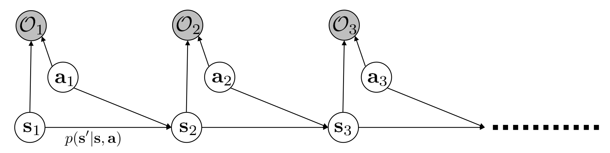
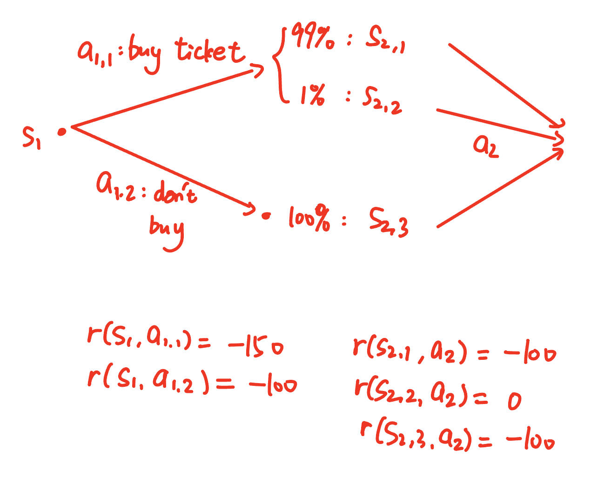

Soft Optimality#
(a.k.a. Reframing Control as an Inference Problem in the original PPT)
这一讲介绍一个很好玩的概念——Soft Optimality。我们从一个问题来出发，一步步引出最终的概念和结论。
Modeling a Monkey?#
我们考虑这一个问题：假设现在我们有一个简单的游戏。比如说，屏幕上有一个随着控制柄运动的红点，和一个绿点。我们的目标是移动控制柄把红点移动到绿点上。对于神经网络而言，随便给定reward，只要不太离谱，这一问题几乎是弱智。
但设想我们并不是为了解决这一问题，而是希望模拟玩这个游戏的一只猴子（可以理解为通过某种“图灵测试”，别人不能区分是猴子还是agent在玩这一游戏）。这一任务就略有难度了，因为显然猴子并不会只做最优的策略。当然，为了使得它和生物学脱耦合，我们做一些假设：
- 猴子的行为可以具有一些随机性（这些随机性不错地刻画了一些我们无法access的生物学变量，比如猴子当前是否很烦躁，或者很疲倦，之类）；
- 但猴子在任何一步，采取最优策略的概率都比较大。
此外，必须强调，这一任务不是imitation learning，因为我们并不能access到猴子的trajectory。我们（比如说）可以做的是，给出一个具有若干超参数的模型，并且（比如）当temperature调到0.1的时候，行为和猴子很相近，调到0.03的时候，和人类很相近，等等。
对于这一问题，倘若我们采用之前的方法，都是不行的，因为我们的目标就是cumulative reward最大，所以无法解释猴子为何作出不是最优的行为。为了解决这一问题，我们需要建立一个全新的方法。
Q: 感觉你能想到模拟猴子这种事情，还是吃得太饱了。
A: 不！这是十分重要的一个问题。比如，在很多研究项目里，我们希望训练一个agent，使得它的行为和人类的行为尽可能相似（比如，“AI狼人杀”）。不仅如此，我们可以看到，接下来的方法还可以反过来给我们原先的optimal control问题提供一个新的思路和更好的算法。
Graphical Model of Dicision Making#

我们建立这样一个graphical model。所谓graphical model，就是指每一条线代表一个依赖关系。比如， \(s_2\) 依赖于 \(s_1,a_1\) ，且依赖关系就是 \(s_2\sim p(s_{2}|s_1,a_1)\) 这一转移概率。
需要注意，图中的 \(O\) 并不是observation，而是我们引入的重要变量——Optimalty。它是一个布尔变量，大致代表这一步是不是作出“优的”决策（这一概念比较玄乎，需要慢慢体会）。 \(p(O_t|s_t,a_t)\) 是一个未知的概率分布，但是我们假设它对于不同的 \(t\) 是同一个函数形式。我们据此重定义 reward：
最后，我们需要建模的对象是 \(p(\tau|O_{1,...,T}=\text{True})\) 。这里注意，我们设置 \(O_{1,...,T}=\text{True}\) ，是因为我们模拟的基本原则还是尽可能作出“优的”决策。
Q: 等等，什么玩意，如果让 \(O_{1,...,T}=\text{True}\) ，不就是一直做最优的决策，那策略不就确定了吗？
A: 你理解的不够准确，这里确实比较抽象。 \(O_t=1\)并不代表这一步作出的 \(a_t\) 在 \(s_t\) 下是最优的。相反，从表达式 \(\log p(O_t=1|s_t,a_t)=\exp r(s_t,a_t)\) 来看，我们也可以看出 \(O_t=1\) 和 \(s_t,a_t\) 是“最优的”没有必然的关系，它们都是以概率的形式出现的。
Q: 你完全把我搞晕了。那这个 \(O_t\) 到底是什么？
A: 其实，如果你不深究，直接按照我们给出的概率和假设来计算也不错。但如果你要深究的话，我们给出的graphical model实际上是一个Hidden Markov Model(HMM)。通俗地讲，HMM是一种模型，它认为可观测的变量由一个隐藏的Markov Process的状态决定，而这个Markov Process的状态是不可观测的。HMM的目的就是根据可观测变量尽可能地推测一些关于隐藏变量的信息。
在这里， \(O_t\) 就对应着可观测变量；不即如此，观测到的所有数据（即我们的模型跑出的trajectory）里， \(O_t\) 都是1。我们的目标就是given了 \(O_t\) 都是1,计算trajectory的条件概率， \(p(\tau|O_{1...T})\) 。
Q: 不是，那你把 \(O_t\) 都取成1,这一变量还有什么用呢？
A: 这你说的就不对了。比如说，如果不给定这个全是1的条件，在只given \(s_{1..t-1},a_{1..t-1}\) 的情况下， \(a_t\) 和 \(s_t\) 是完全独立的变量；但现在，绝对不是这样。
换句话说，HMM的特点就是，因为观察到了可观测变量，导致隐藏变量的transition probability发生了改变。而我们通过取可观测变量的 \(O_t\) 以某种方式依赖于trajectory，并且强行令 \(O_t=1\) ，就改变了trajectory的分布：把它从完全没有约束时候的均匀分布，变到现在（至少我们希望）能够模拟猴子的trajectory的分布。
接下来，我们可以来初步计算 \(p(\tau|O_{1,...,T}=\text{True})\) ：以下所有常数代表不依赖于 \(\tau\) 的常数。
其中
是只与环境有关的概率。（这里 \(p(a_1|s_1)\) 等都是均匀的概率分布。）
现在，考虑一个简化情况，我们会发现我们的模型确实合理：假设 \(p(\tau)\) 只是一些consistency check，也就是 \(p(s_{t+1}|s_t,a_t)\) 在 \(s_{t+1}\) 满足某些和 \(s_t,a_t\) 的关系时是均匀分布，否则是0。这样，前面的表达式就变成了
也就是说，对于最大的cumulative reward，选择这一trajectory的概率是最大的；但对于其他trajectory，也有概率可以选到。这就说明，我们的模型给出的还算是一只合理的猴子。
Inference of the Graphical Model#
稍微理解了这一model在做什么之后，我们就可以把整个问题转化为一个概率问题（称为这个graphical model的Inference）：给定上面的graphical model，和概率分布
- \(p(s_{t+1}|s_t,a_t)\) 已知；
- \(p(O_t=1|s_t,a_t)=\exp r(s_t,a_t)\) ；
我们的目标是来计算：
- \(\beta_t(s_t,a_t)=p(O_{t..T}=1|s_t,a_t)\) ，称为backward message；
- \(\pi_t(a_t|s_t)=p(a_t|s_t,O_{1..T}=1)\) ，也就是policy；
- \(\alpha_t(s_t)=P(s_t|O_{1..{t-1}}=1)\) ，称为forward message。
其中第二条是我们最感兴趣的，也和我们的问题有关；而第一条和第三条是graphical model的术语，我们后面会看到它们的作用。
在开始计算之前，我们首先声明：按照我们的graphical model， \(a_t|s_t\)这一分布是均匀的。对于这一分布不均匀的情况，也可以做类似的推导，但我们就不在这里讨论了。
Backward Message#
对于backward，我们可以建立起一个递推关系。具体地，
引入记号 \(\beta_t(s_t)=\mathbb{E}_{a_t\sim p(a_t|s_t)}[\beta_t(s_t,a_t)]\) ，有
我们忽然发现这样的表达式有些眼熟！的确，如果令
那么我们就有
注意，我们的 \(r(s_t,a_t)\) 并不是传统意义上的reward（在本讲不妨把传统意义上的reward记作 \(r_{c}\) ），而是通过前面的奇怪方式定义得到的。因此，我们也就知道了，当我们选取
并且 \(r(s_t,a_t)\to \infty\) 的时候，我们这一graphical model给出的 \(\beta_t\) 具有一种“Q function”和“V function”的意思。当然，backup方程中并不是直接取最大值，而是取了一个logsumexp，这可以视作一种“软的”最大值，但softmax这一名词已经用过了，我们不妨管这一操作叫做 “birdmax”（注意，这个名词是我自己造的，不要用）。
这样，我们就有
这是一个递推的方程，我们可以从 \(V_T(s_T)=0\) 开始，倒着计算出所有的 \(V_t(s_t)\) 和 \(Q_t(s_t,a_t)\) 。
Policy#
我们需要计算
注意到 \(p(O_{1..T}=1|a_t,s_t)=p(O_{1..t-1}=1)p(O_{t..T}=1|a_t,s_t)\) ，因此有：
而归一化系数实际上是已知的。因此，有
换句话说，就是
也就是说，我们的policy是一个softmax形式的policy，其中logit就是advantage。如果你之前了解过SAC(Soft Actor-Critic)算法，你会发现这里的形式和SAC的形式是很像的；如果你不了解，也没有关系，因为SAC的一种理论来源就是这里。我们之后就会介绍SAC方法。
当然，就如之前提到的那样，这里的 \(r(s_t,a_t)\) 和真实世界的reward \(r_c(s_t,a_t)\) 并不相等，因此我们实际的应用中一般引入一个参数 \(\alpha\) ，给出
其中 \(A_c\) 是传统的Q function \(Q_c\) 和V function \(V_c\) 的差值计算出的advantage。
Forward Message#
最后，我们讨论forward message，也就是
对于 \(\alpha\) 的递推，其实很难写出比较简洁的形式。我们类似地有
按这个递推式理论上可以给出forward message的表达式。但实际上更重要（也更漂亮）的一个表达式，是 \(s_t\) 的state marginal：
我们可以思考这一表达式的含义，它实际上很有道理：backward message \(\beta_t(s_t)\) 描述的是，在state \(s_t\) 处向后看，作出的决策是“优的”的概率；而forward message \(\alpha_t(s_t)\) 描述的是，一直做“优的”决策，到达 \(s_t\) 的概率。这二者结合起来，大概就刻画了 \(s_t\) 在整个“优”决策中的分布。
Variational Inference of the Graphical Model#
What's the Problem?#
上面的模型真的能很好地模拟猴子的行为吗？看起来，policy的表达式以exponential advantage为正比，已经很接近我们的直觉了。但是，有一个很严重的问题——optimism problem。
问题的来源出现在Q function的update:
注意birdmax的计算方式是logsumexp，这很容易造成过度的自信。
我们考虑如下的例子。

考虑一个流浪汉，他每天都会饿肚子，因此每天正常都有一个负的reward。我们考虑开始的一天（ \(s_1\) ），他发现一个售卖彩票的商店。如果买了彩票（记为 \(a_{1,1}\) ），那么他可能会付出额外的钱，因此这一天的reward为-150（ \(r(s_1,a_{1,1})=-150\) ）。但如果他不买彩票（记为 \(a_{1,2}\) ），那么他就不会付出额外的钱，reward为-100（ \(r(s_1,a_{1,2})=-100\) ）。如果他买了彩票，第二天他会以99%的概率没有获得任何（ \(s_{2,1}\) ），他不管做什么（记这个没什么用的action为 \(a_2\) ）都会继续饿肚子（ \(r(s_{2,1},a_2)=-100\) ）；但他也有1%的概率中奖，他得以吃饱（ \(r(s_{2,2},a_2)=0\) ）。当然，如果他没有买彩票，那依然是饿肚子（ \(r(s_{2,3},a_2)=-100\) ）。
（这个例子有点唐，主要是因为我们的reward必须不能超过0）。现在，我们可以按照前面的birdmax update方式计算一下这个环境下的Q function和V function。

我们会发现，对于买彩票的action，虽然大概率第二天的reward是-100，期望上也基本是-100，但是其birdmax之后是 \(\log (0.99\times 10^{-100}+0.01\times 1)\approx -2\) 。这就导致，买彩票之后，Q function反而更高（-152）。并且，此时按照exponential advantage给出的policy有接近于1的概率买彩票！对于这位可怜的流浪汉，这显然是不合理的。
我们仔细想一想，这一问题究竟来自于哪里？从数学公式上看，对不同state的birdmax过分高估了state的“潜能”，但这不够本质；本质实际上是，我们过分地condition on了决策是“优”的这一事实。
具体地，在上面的例子里，我们考虑买彩票这一个action。假设我们什么都不condition，那么赚钱的概率显然是很低的（1%）；但如果我们condition on了决策是“优”的这一事实，那么赚钱的概率就变成了
换句话说，在前面的推导里，我们取
这一点并不合适。因为这相当于告诉了流浪汉：“你放心买彩票吧，我有后门，包准赢！”。但事实是残酷的，转移概率不是 \(p(s_{t+1}|s_t,a_t,O_{1..T}=1)\) ，而是 \(p(s_{t+1}|s_t,a_t)\) 。
因此，我们的policy应该重新被选取。很自然地，我们选取它为残酷的事实下的最近似分布：
其中
为理想的分布；而
为我们约束下的分布。
Variational Inference#
我们发现，这一问题十分像variational inference！如果记
那么这一问题就是
还记得我们在前一讲VAE的介绍中给出的，
而和之前不同的是，现在 \(\log p(x)\) 和我们要优化的东西无关，因此我们只需要最大化ELBO。这时，我们就可以用它的第二种表达形式：
这时，注意到 \(p(x|z)\) 是容易计算的：
而KL divergence中的
这样，我们就最终写出objective：
在 \(p(a_t|s_t)\) 均匀的假设下，这就变成了
可以看到，这一objective和我们熟悉的RL objective非常相似，只是多了一个entropy bonus。这很合理，因为我们一开始的假设就是，猴子会基本按照最优策略，但是也会有一些随机性。这一随机性就恰恰由entropy bonus给出，而entropy bouns也解释了为何sub-optimal的action也会被选取。
Solving for the Optimal Policy#
我们把前面的objective展开：
这样，我们可以像之前说的LQR一样，求解最优的policy。作为假设，我们认为我们的网络表现能力足够强，以至于given任意state \(s\) 都可以随意选取 \(\pi(a|s)\) 。这样，对于 \(s_T\) 的最优policy就可以直接计算得到：
再注意到
因此，立刻可以给出
接下来，我们再次递推。假设 \(t+1\) 时已经给出了最优的策略为
并且使得
（这里扔掉了一些可能和 \(\log p(a_{t+1}|s_{t+1})\) 相关的常数）其中 \(\hat{Q},\hat{V}\) 是某待定函数。这样，带回到 \(t\) 时，我们就可以得到 \(t\) 时刻的等效objective为
因此，只要满足
就可以使得归纳被满足。这样，我们就给出了最优policy的解。
略微总结，我们使用variational inference，最终得到的答案是（合理地插入了discount）
（这里出于和之前说的一样的理由，一个temperature参数 \(\alpha\) 作为hyperparameter需要被引入。）
可以看到，这一迭代方式比较奇特——在Q算V的时候，我们用的是比较“软”的birdmax；而在V算Q的时候，我们直接使用期望值。这有点像是之前第一个版本的graphical model inference方法和普通的Q-V iteration方法的结合。普通的Q-V iteration不允许sub-optimal behavior的出现；graphical model inference方法出现严重的optimism问题；而这一方法结合了两者的优点，并且建立在坚实的理论依据上，给出了一个很好的解决方案。
如果你感兴趣，也可以把这个新的迭代公式代入我们之前买彩票的例子。你会发现，流浪汉不会再作出那荒谬的决定了。
Soft Optimality#
我们终于可以引入soft optimality的概念了。其实，这也没有它听起来的那样高级：
- 它的目标就是之前说的那样，试图模拟人类的行为。也就是说，它给出一个向往美好，但也不严格最优的行为。
- 为了产生最优解之外的解，模型引入随机性，表现为entropy bonus。注意到entropy bonus不仅强调了随机，还强调了均匀的随机。
- 同时，传统的Q-V iteration保证了模型依然具有一定的最优性。
soft optimality就是这些东西的杂交产物，在一个specific的，目标是“刷分”的传统RL问题中，它的表现不一定比传统的Q-V iteration好；但必须注意，它的设计本身并不是为了解决传统的，使得agent获得最大reward的问题。
但有意思的是，即便这么说，在很多情况下，加入了entropy bonus的方法反而比之前我们介绍的那些Q learning方法更好。我们接下来就来介绍soft optimality的一些应用。
Application of Soft Optimality#
Soft Actor-Critic#
SAC算法可以说是Q learning方法中最大名鼎鼎的一种（虽然我们之前的18讲中都没怎么提到它！）。它就是基于前面的soft optimality的理论。
SAC algorithm
重复：
- 更新 Q function: \(Q(s,a)\leftarrow r(s,a)+\gamma[Q(s',a')-\log \pi(a'|s')]\) （当然，要采用target network等优化，和之前一样，不再赘述）；
- 使用 REINFORCE 或者 REPARAMETERIZE 来更新policy，objective为 \(J=\mathbb{E}_{a\sim \pi(a|s)}[Q(s,a)-\log \pi(a|s)]\) 。
- 如果使用 REINFORCE，那么 fake loss 为 \(\hat{J}=\mathbb{E}_{a\sim \pi(a|s)}[\log \pi(a|s)Q(s,a)]+\mathcal{H}(a|s)\) （这是对一组数据的梯度）；
- 如果使用 REPARAMETERIZE，那么直接计算loss就可以了。
- 你可能会疑问，用 REINFORCE 怎么计算熵 \(\mathcal{H}\) 的梯度？实际上，也不是不可以，只需要把fake loss设置为 \(\frac{1}{2}\mathbb{E}_{a\sim \pi(a|s)}[(\log \pi(a|s))^2]\) 就可以了。当然，这看起来比较奇怪。实际上，REPARAMETERIZE的效果确实也更好。
- 根据policy来收集数据。
注意这一algorithm和之前的soft optimality给出的公式具有细微的差别：在update Q 的时候，我们不再单独使用birdmax计算 \(V\) ，因为在continous action space上很难计算出来；转而我们用 \(\log \pi\) 来估计 \(V\) ，这是普适的。当然，在discrete action上面，我们也可以使用birdmax。这一算法叫做 “soft Q-learning”：
Soft Q-learning
- 更新 Q function: \(Q(s,a)\leftarrow r(s,a)+\gamma\cdot \text{BirdMax}_{a_{t+1}}[Q(s_{t+1},a_{t+1})]\) （当然，还是要采用target network等优化）；
- 根据某种exploration policy来收集数据。
SAC algorithm的效果十分显著。一方面，它训练出来的policy具有很强的robustness，因为entropy bonus鼓励policy四处探索，可以理解为它在各种方向上都有很好的解决方案。在实验上，用SAC训练出来的移动物品的机器人，即使人对它拳打脚踢导致它的机械臂移动了很远，当“攻击”结束后它依然能反应过来，继续完成任务。
另外一方面，SAC可以做很好的pretraining。什么样的任务需要pretraining呢？设想这样一个问题：我们要训练一个humanoid走迷宫的任务，ddl是5天。但迷宫这一环境在第四天才会公布。在此之前，我们只能在无限大的平面上训练一个humanoid来走路。在pretraining过程的reward（比如用质心速度作为reward）下面，我们训练出一个模型参数；我们希望在这组参数的初始化下，当新的reward来临时，我们的模型能够很快地适应。
在这样的情况下，Soft optimality-based的方法显著地outperform了DDPG等传统算法。道理也很简单——传统的方法没有关注entropy项，因此policy很可能只学习某种方案。比如，humanoid只能一路向北，而完全没有向西或东走的能力。这样，假设目标在humanoid的东边，那么预训练还不如不做——模型要先“unlearn”之前学到的错误方向的东西，再“relearn”新的知识。
但是，Soft optimality-based的方法，由于有entropy bonus，因此在pretraining的时候就会学到各种方案，因此在新的reward下，它迅速可以适应并找到之前的方案里面哪一个是最优的，实施就可以了。
Summary: What Soft Optimality Brings Us#
我们最后来简单总结soft optimality的一些优点：
- exploration：因为max entropy，所以policy会四处探索，这就是为什么有时候SAC在经典的任务上也跑的更好；
- easy to finetune：就像我们刚刚所说的那样，soft optimality-based的方法在pretraining上表现更好；
- robustness：仍然是因为max entropy，policy学会的更多，所以它的robustness更好；
- more general approach：不管怎么说，再不济，我们把temperature调节为0也可以回到传统的Q learning方法。因此，这样的方法肯定在调参后不会差。
- more human-like：这一点是最重要的，也是我们的初心。这样训练出来的agent像有血有肉的人，而不是变成一个追求最优的机器。
Reference Papers#
- Reinforcement Learning and Control as Probabilistic Inference: Tutorial and Review（graphical model的引入）
- Modeling Interaction via the Principle of Maximum Causal Entropy（maximum causal entropy的引入）
- Reinforcement Learning with Deep Energy-Based Policies（soft Q-learning的引入）
- Soft Actor-Critic Algorithms and Applications（更多的SAC算法）
- Equivalence between policy gradients and soft Q-learning
Created: 2024年10月29日 20:50:57